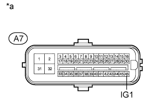

DTC C1417 High Power Supply Voltage Malfunction |
| DTC Code | DTC Detection Condition | Trouble Area |
| C1417 | The IG1 terminal voltage is 17.4 V or higher for 0.8 seconds or more. |
|
| 1.CHECK TERMINAL VOLTAGE (IG1) |
Disconnect the A7 skid control ECU connector.
|  |
Measure the voltage according to the value(s) in the table below.
| Tester Connection | Switch Condition | Specified Condition |
| A7-46 (IG1) - Body ground | Engine switch on (IG) | 11 to 14 V |
| *a | Front view of wire harness connector (to Skid Control ECU) |
|
| ||||
| OK | |
| 2.RECONFIRM DTC |
Clear the DTC (Click here).
Check if the same DTC is output (Click here).
| Result | Proceed to |
| DTC is not output | A |
| DTC is output | B |
|
| ||||
| A | ||
| ||